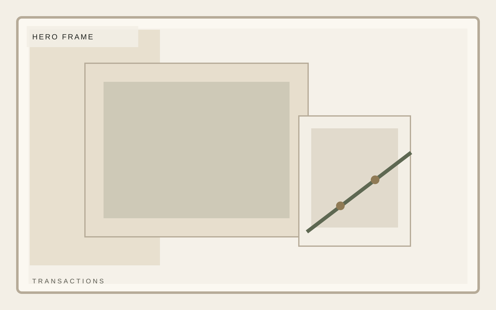
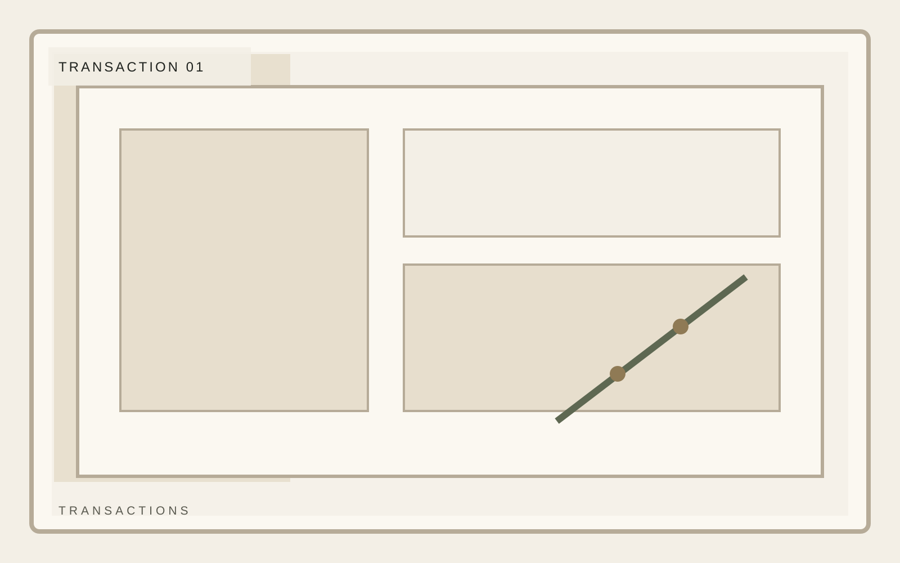
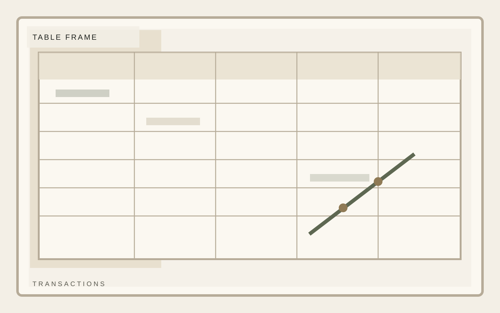

Institutional investment
Selected situations where composure mattered more than spectacle.
A composed private investment platform focused on durable middle-market businesses, disciplined underwriting, and practical value creation. Still frames must carry credibility even before someone reads the detail.
Focus
North American middle market
Hold posture
3 to 7 year horizon
Approach
Operator-led value creation

Institutional investment
Featured Transactions
Each transaction should earn its place. Use clean context, a short rationale, and disciplined still frames rather than decorative logos.
Selective mandate
Operator context
Calm reporting

Institutional investment
Table
The table frame should look like a designed working document: readable, aligned, and clearly part of the brand system.
Table
| Item | Signal | Implication |
|---|---|---|
| Primary frame | Clear hierarchy | Faster comprehension |
| Section density | Measured text load | More trust, less filler |
| Visual rhythm | Deliberate cadence | Memorable still frames |

Institutional investment
Approach
This closing strategy frame should explain how the team behaves once a situation becomes real, not merely how it markets itself.
Selective mandate
Operator context
Calm reporting